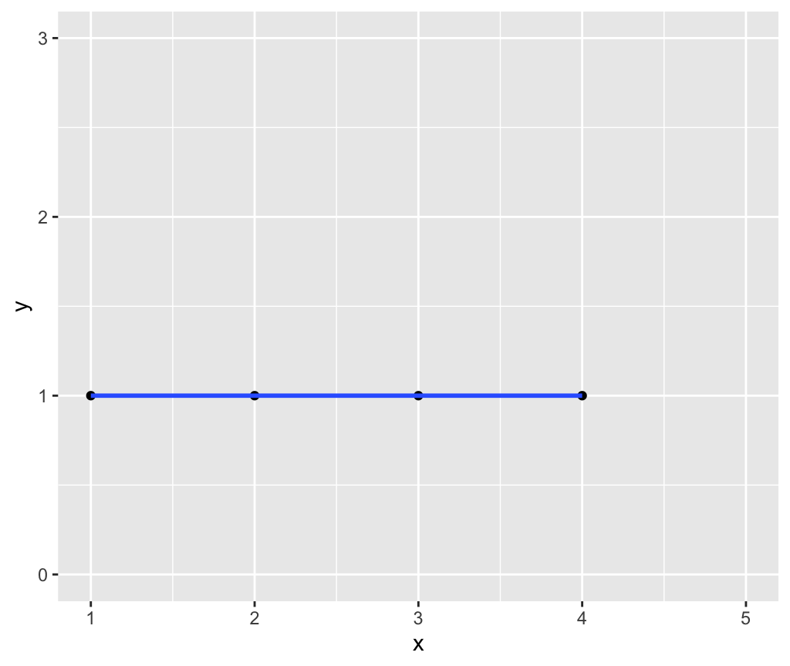

library(ggplot2)
library(dplyr)
example <- tibble(
x = c(1, 2, 3, 4, 5),
y = c(1, 1, 1, 1, 5)
)
ggplot(example, aes(x = x, y = y)) +
geom_point() +
geom_smooth(method = "lm", se = FALSE)Problem Sets
Extension Requests
- You have an extension “budget” of a maximum of 5 days for the rest of the semester; it’s up to you to keep track of your budget
- Request must be made before due date/time.
- Google Form
Problem set 07
Due Monday 12/6 9pm
For this problem set you will start building a GitHub portfolio of work. You need to complete all steps to receive full credit.
1. Edit your public GitHub profile
Learning Goal: Edit your public GitHub profile (if you haven’t already). Think of this as a professional profile like a LinkedIn profile. Refer to Sec02 in-class data assistant Marium Tapal’s profile as an example.
- Add your name
- Change your default profile picture. It doesn’t have to include your face if you’re not comfortable.
- Add whatever other info to your profile you feel comfortable being public.
2. Create your first repo with a README
Learning Goal: Build your first README. Think of this as a cover page to market your project.
- Get started
- Download the following zip file:
PS07.zip. - Move
PS07.zipto your SDS192 folder on your computer - Unzip
PS07.zip. Windows users: be sure to “Extract all” - In the resulting PS07 folder, double-click the RStudio Project
PS07.Rprojicon. For this PS you should always work in “PS07” RStudio Project mode
- Download the following zip file:
- Change the default contents of
README.Rmdto anything you like. In particular look at RStudio menu bar -> Help -> Markdown Quick Reference for markdown formatting tips.- Title
- Section names
- The plot (change it to be a
ggplot2plot)
- Knit
README.Rmdto produceREADME.mdwhich is your repo’s cover page - Put your work on GitHub. See screencast:
3. Submission
Submit a link to this GitHub repository using this Google Form.
Problem set 06
Due Monday 11/15 9pm
1. R Markdown component
Getting started:
- Download the following zip file:
PS06.zip. - Move
PS06.zipto your SDS192 folder on your computer - Unzip
PS06.zip. Windows users: be sure to “Extract all” - In the resulting PS06 folder, double-click the RStudio Project
PS06.Rprojicon. For this PS you sound always work in “PS06” RStudio Project mode (See Lec26 Mon 11/8)
Submission:
- You will only be submitting the resulting
PS06.pdffile on gradescope. Please use the “Knit to PDF” method directly, instead of “Knit to Word” and then save to PDF method. - If you encounter issues knitting your document, consult the 6 R Markdown Fixes.
- Submit on gradescope:
- For each questions, tag all pages of your PDF that relate to that question (not just the first)
- You will be asked to tag the honor code question as well.
Problem set 05
Due Monday 10/25 9pm
1. R Markdown component
- Download the following Rmd template file:
PS05.Rmd. - You will be submitting the resulting
PS05.pdffile on gradescope. Please use the “Knit to PDF” method directly, instead of “Knit to Word” and then save to PDF method. - Complete the individual questions. Knit early, knit often.
- If you encounter issues knitting your document, consult the 6 R Markdown Fixes.
- Submit on gradescope:
- For each questions, tag all pages of your PDF that relate to that question (not just the first)
- You will be asked to tag the honor code question as well.
2. Solutions
PS05_solutions.RmdR Markdown “source code”PS05_solutions.pdfPDF
Solutions to PS05 Q1.c). What happened to the average age above 60? The hint given on Slack was to look at the ggplot2 cheatsheet -> 2nd page -> Bottom right corner -> “Zooming”
ylim(a, b)sets the limit on the y-axis to be betweenatoband “clips” (throws out) any points outside this intervalcoord_cartesian(ylim=c(a, b))zooms in on the the y-axis to be betweenatobbut does not “clip” (throw out) the points outside this interval
For example, consider the following regression line:
Let’s set the y-axis limit to be between 0 and 3. Using ylim(0, 3) clips out the point (5, 5) and thus the regression line is flat:
ggplot(example, aes(x = x, y = y)) +
geom_point() +
geom_smooth(method = "lm", se = FALSE) +
ylim(0, 3)
However, using coord_cartesian(ylim = c(0, 3)) merely zooms in on this part of the y-axis without clipping the point (5, 5) and thus the regression line is the original one:
ggplot(example, aes(x = x, y = y)) +
geom_point() +
geom_smooth(method = "lm", se = FALSE) +
coord_cartesian(ylim = c(0, 3))Problem set 04
Due Monday 10/18 9pm
1. R Markdown component
- Download the following Rmd template file:
PS04.Rmd. - You will be submitting the resulting
PS04.pdffile on gradescope. Please use the “Knit to PDF” method directly, instead of “Knit to Word” and then save to PDF method. - Complete the individual questions. Knit early, knit often.
- If you encounter issues knitting your document, consult the 6 R Markdown Fixes.
- Submit on gradescope:
- Anytime between Wed 10/13 8pm and Mon 10/18 9pm
- For each questions, tag all pages of your PDF that relate to that question (not just the first)
- You will be asked to tag the honor code question as well.
2. Solutions
PS04_solutions.RmdR Markdown “source code”PS04_solutions.pdfPDF
Problem set 03
Due Tuesday 9/28 9pm
1. R Markdown component
- Download the following Rmd template file:
PS03.Rmd. - You will be submitting the resulting
PS03.pdffile on gradescope. Please use the “Knit to PDF” method directly, instead of “Knit to Word” and then save to PDF method. - Complete the individual questions. Knit early, knit often.
- If you encounter issues knitting your document, consult the 6 R Markdown Fixes.
- Submit on gradescope:
- Anytime between Mon 9/20 5pm and Tue 9/29 9pm
- For each questions, tag all pages of your PDF that relate to that question (not just the first)
- You will be asked to tag the honor code question as well.
2. Solutions
PS03_solutions.RmdR Markdown “source code”PS03_solutions.pdfPDF
Problem set 02
Due Monday 9/20 5pm
1. R Markdown component
- Download the following Rmd template file:
PS02.Rmd. - You will be submitting the resulting
PS02.pdffile on gradescope. There are two methods to create a PDF:- “Knit to PDF”. This is the preferred format (for consistency for the graders).
- If this doesn’t work for you, then “Knit to Word” and then export/save as PDF
- Complete the individual questions. Knit early, knit often.
- If you encounter issues knitting your document, consult the 6 R Markdown Fixes.
- Submit on gradescope:
- Anytime between Mon 9/13 5pm and Mon 9/20 5pm
- For each questions, tag all pages of your PDF that relate to that question (not just the first)
2. Solutions
PS02_solutions.RmdR Markdown “source code”PS02_solutions.pdfPDF
Problem set 01
Due Monday 9/13 5pm
- If you haven’t already, complete the intro survey distributed on Friday.
- Complete a syllabus quiz.
- Open the following Google Doc and in the menu bar click “File -> Make a copy…”
- Answer the questions based on information in the syllabus.
- Submit a PDF of your syllabus quiz responses on gradescope:
- Your gradescope account is based on your Smith, 5 College, or other official email.
- Create your account on gradescope via the email sent to you this morning. If you did not receive such an email, add yourself to the course using Entry Code: 6PNXZ5.
- Log into gradescope
- Added after lecture: You can edit gradescope submissions as many times as you like before the due date/time.
- Added after lecture: You need to “tag” the 11 individual questions on whatever page(s) they are on (demo on Fri 9/10)